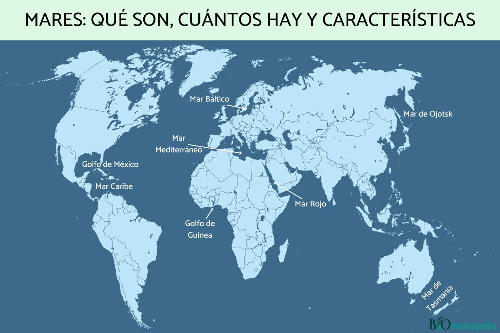

La oceanografía es un campo de la ciencia que estudia los mares, océanos y todo lo que se relaciona con ellos, es decir, la estructura, composición y dinámica de dichos cuerpos de agua, incluyendo desde los procesos físicos, como las corrientes y las mareas, hasta los geológicos, como la sedimentación o la expansión del fondo oceánico, o los biológicos.La misma ciencia recibe en español también los nombres de ciencias del mar, oceanología y ciencias marinas.
La oceanografía como campo de la ciencia, es heredera de los servicios hidrográficos responsables de la elaboración de cartas náuticas, creadas en diversos países en el siglo XVIII para recopilar y sistematizar las diferentes cartas elaboradas por los capitanes de los navíos desde la época de los descubrimientos; por ejemplo en España, la Dirección de Hidrografía creada en 1797;[4] en Francia en 1720 o en el Reino Unido en 1795.

El estudio del comportamiento de los mares, se remonta a las primeras aventuras del ser humano, más allá de la costa. A los fines de navegación, era importante conocer la dirección de los vientos predominantes y las corrientes, que facilitasen y acortasen la duración de los viajes; así como, la profundidad de las aguas cerca de costa o lugares de fondeo, por razones de seguridad.
Es casi seguro que fenómenos como las mareas fueron tempranamente observados, anotados e incluso pronosticados; aun cuando no tengamos registros escritos de ello. Aristóteles y Estrabón fueron los primeros en escribir sobre esto, en el mundo occidental. El primer registro de la relación entre las mareas y las fases de la luna, se atribuye a Piteas, en el siglo IV a. C.; este mismo filósofo, también realizó una expedición de investigación al mar Báltico y el círculo polar ártico.
Toda esta información era trasmitida por vía oral a los aprendices y guardada en secreto por razones de seguridad y comercio; es posible que parte de esta información se trasmitiese también mediante medios como las varillas de mareas que usaban las naciones polinesias para atravesar el océano Pacífico.
El conocimiento de los océanos se limitaba a las pocas brazas superiores del agua y a una pequeña parte del fondo, principalmente en zonas poco profundas. No se sabía casi nada de las profundidades oceánicas. Los esfuerzos de la Royal Navy británica por cartografiar todas las costas del mundo a mediados del siglo XIX reforzaron la vaga idea de que la mayor parte del océano era muy profunda, aunque poco más se sabía. A medida que la exploración despertaba el interés popular y científico por las regiones polares y África, también lo hacían los misterios de los océanos inexplorados.
El acontecimiento seminal en la fundación de la ciencia moderna de la oceanografía fue la expedición Challenger de 1872-1876. Como primer verdadero crucero oceanográfico, esta expedición sentó las bases de toda una disciplina académica y de investigación.[20] En respuesta a una recomendación de la Royal Society, el Gobierno británico anunció en 1871 una expedición para explorar los océanos del mundo y realizar las investigaciones científicas pertinentes. Charles Wyville Thomson y Sir John Murray lanzaron la expedición Challenger. Challenger, arrendado a la Royal Navy, fue modificado para el trabajo científico y equipado con laboratorios separados para historia natural y química.